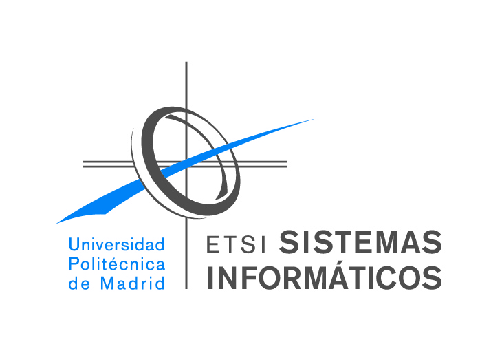

E.T.S.I. Sistemas Informáticos
Web Development — Practical exercise:
UFO Battle
Created by
Luka Piljic
Use the menu to open
Preferences
, then go to
Play
. Use
Login
to save your final score and view
Records
.